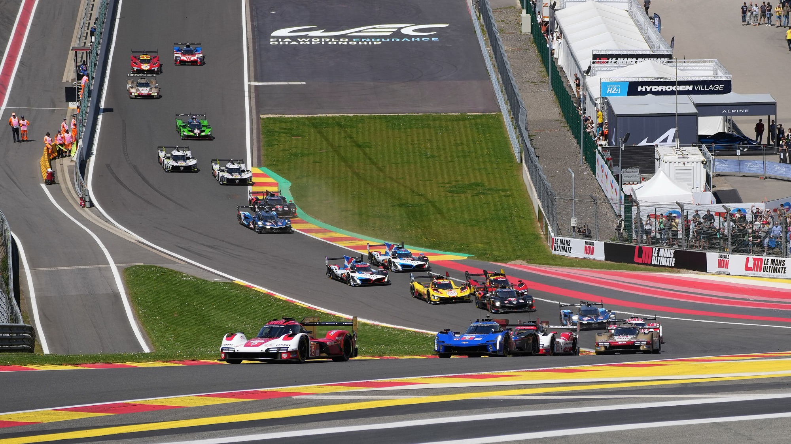
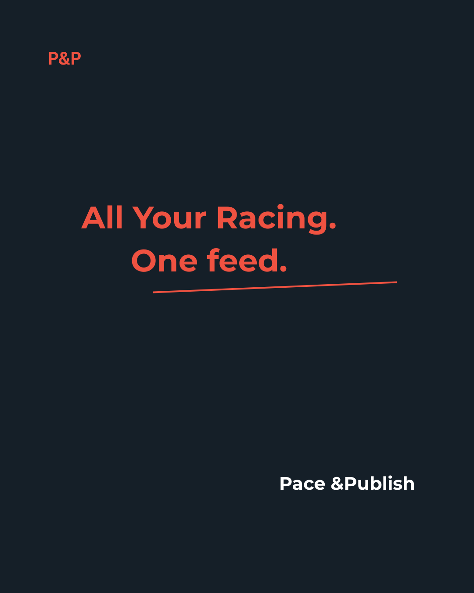
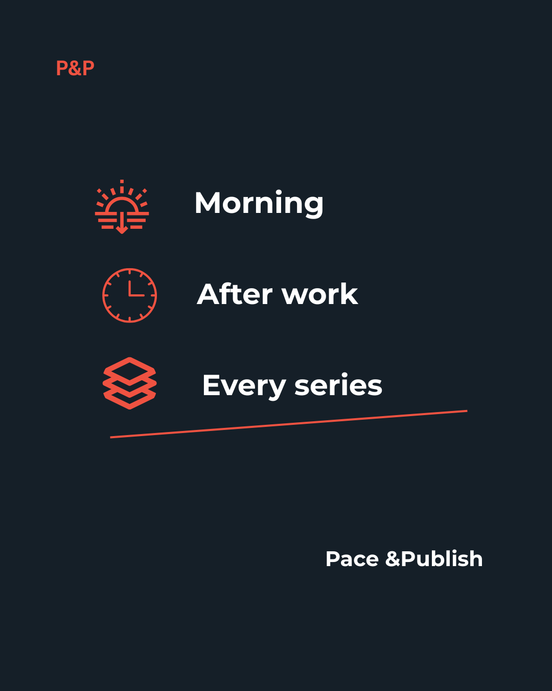

Motorsport news · all in one place
Your racing news in one place
Pace & Publish brings you F1, MotoGP, NASCAR and WEC news, race results and race schedules, all in one place.
Video: Formula 1 cars racing on a circuit with a city skyline · Abhilash Venkat, via Pexels (Pexels License) · Photo: WEC, 2024 6 Hours of Spa-Francorchamps · MarcelX42, CC BY-SA 4.0, via Wikimedia Commons
All in one place
Four series, one site. Pick a series to see its news.
Latest news
All news →Race weekend planner
Every session you follow, in one list, in your time zone
Pick F1, MotoGP, NASCAR or WEC, choose your time zone and see the whole weekend in time order, with clashes marked.
From our Instagram launch
The three posts that launched @paceandpublish.
Follow @paceandpublish on Instagram ↗

